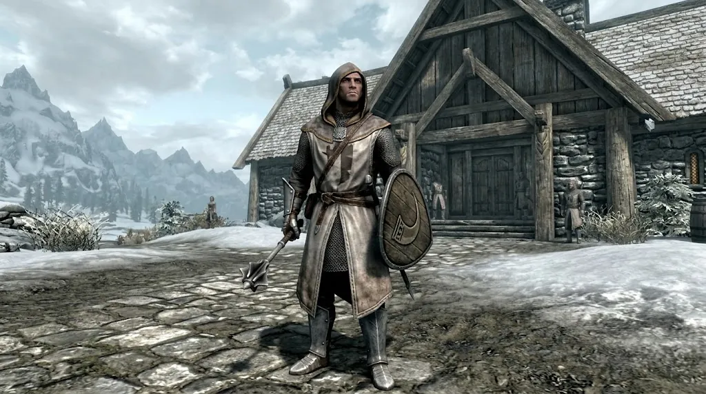

This is Kyle's own character. Everyone else plays their own.
He is a Breton man from Cyrodiil and a Vigilant of Stendarr. He walks north to find his order.
Each fact below says where it came from. What we have not checked says so.
UESP is a fan-run game wiki. The clip is a fan video, and it is labelled wherever we use it.
Character card
Name: [NAME], left open.
He came north on foot from Cyrodiil, under a tan hood and winter mail. On Skyrim’s white roads he keeps his mace low and his shield ready. A wound gets his hands before an enemy gets his weapon; the Vigilant’s oath is to shelter the living. Whether the Dawnguard will one day call him remains for another road to decide.
At the table. Brings: crafting, potions brewed for friends, and Restoration healing. Keeps: the group’s quests, and a quick eye for how clues connect. Working on: hoarding. He vows to pass gold and spare gear to his friends quickly, and gladly takes their hand-me-downs in return.
At a glance
Question
Answer
Who is he?
A Breton man. A Vigilant of Stendarr, from Cyrodiil.
Where do we meet him?
On the road north into Skyrim, near Helgen. He is not escaping Helgen's execution.
What does he want?
To reach his order, or get back to it. A Stendarr shrine can be his base.
How far will he fall?
Open. Play decides it.
Will he join the Dawnguard?
Open. Play decides it.
Does the party start together?
Maybe not. It may start scattered. A couple of us may meet in a town.
How does he play?
Healer first. He keeps the party alive before he attacks.
Know these first

In-game screenshot from The Elder Scrolls V: Skyrim (Bethesda). Chosen by Kyle as the look for his character. Original source not found. The armor looks like a mod’s, not the base game’s robes. We do not know which mod.Emblem: an original drawing made for this page. It is not Stendarr's official symbol and uses no game art.
Lore: what the Vigil believes and does
The clip is a fan video by one fan, not game text. Rows marked "Fan video only." are its reading.
Topic
In short
Source
Four enemies
The Vigil hunts abominations: Daedra, werewolves, vampires and witches. The old doctrine names four kinds: Daedra, man-beasts, risen dead and vampires.
They ignore Daedric weapons, armor and conjured Atronachs near them, despite their words. A scene where they demand Daedric artifacts is in the game data, switched off.
The worst of them. Profane creatures with no hope of redemption. They lure innocents to death and corrupt the souls they touch. Their artifacts give mortals power, so the artifacts must be destroyed or guarded.
Close ties. Two former Vigilants, Isran and Celann, restarted it. Isran thought the Vigil too soft. When vampires burned the Hall, Tolan went to Isran for help.
Yes, the clip names alchemy, restoration and destruction. The clip is a fan video. It says Vigilants must learn all three and fight with maces. It gives no game source for must.
Skill
The fan video says
The game shows (UESP)
Alchemy
Must learn it. The Hall has two alchemy labs.
Each Vigilant carries healing potions and a cure disease potion.
Restoration
Must learn it. Healing is their trade.
Every Vigilant knows the Healing spell.
Destruction
Must learn it. The fan video says they add fire magic to the mace.
The list shows no fire spell for a Skyrim Vigilant. Fan video only.
Mace
Vigilants fight with maces.
Each Vigilant carries a mace. It gets better as they level.
Defense
They cast a protective armor spell before a fight.
Every Vigilant knows Oakflesh and Lesser Ward.
Jack of all trades
They know a little of everything. Few master any of it. Fan video only.
Not stated.
Lore: history
When
What happened
Source
Founding
The Vigil was founded soon after the Oblivion Crisis of 3E 433. Older Stendarr orders came before it.
“He is the God of Mercy. The patron of order and justice for all of Tamriel. We bring his compassion where none can be found, by cleansing all those who would offend his children.”
Precepts, Four Abominations and The Sounding Horn are lore books from The Elder Scrolls Online. They are not in Skyrim. Notes on Dimhollow Crypt and Discovering Ruunvald are Skyrim books from the Dawnguard add-on.
Line
Book
Source
“Never refuse aid you are capable of providing.”
Precepts of Stendarr, by Ptolus the Bright, a Resolute of Stendarr. First precept.
Dragonskin, the base game's once-a-day spell absorption, is gone on our server. Imperious gives Bretons spell absorption that switches on when their magicka runs low.
All are Allowed on the rules page. Healing other players in co-op is not fully tested.
Co-op note. Potions he brews and gear he enchants may not pass between players under Skyrim Together. Reports say a crafted potion or enchanted item can fail to reach another player. We have not tested it in our pack. The group's first co-op test checks it. Until then, brew for yourself first.
One group. Oakflesh, Ironflesh, Stoneflesh, Ebonyflesh and Dragonhide lose their Mage Armor bonus while you wear any light or heavy armor. The spell still works. It is the same rule as the base game.
More armor. Perks add 20% to 100% more rating, 25% more with three heavy pieces, and 25% more with three matching pieces. Three pieces also halve fall damage and reflect some melee hits.
Perk points in the Heavy Armor tree. The Conditioning perk text says heavy armor then weighs nothing and does not slow you, so it weighs and slows without it. We have not measured that.
The Pale, on a table inside the Hall, south of Dawnstar. The shrine goes when the Hall is destroyed: at level 10 with Dawnguard installed, or when the Dawnguard quest starts, whichever comes first.
Map: an original drawing, plotted from the game location data in our install. The grid above gives the same distances.
The closest shrine to Helgen
Question
Answer
Which is closest?
The Two Pillars, in Whiterun Hold.
How far?
About 23 cells in a straight line. About 33 cells walking from town to town.
What does a shrine give?
The Blessing of Stendarr: block 10% more damage with your shield, for 8 hours. It also cures disease. That is the base game. We have not re-read it in our install.
Could the Hall be his base instead?
Yes, until he reaches level 10 or the Dawnguard quest starts, whichever comes first. Then it burns. Stendarr's Beacon is the shrine that survives, but it is far to the east.
The road from Helgen
UESP gives positions, not the bends of the road. We have not walked the road.
Stop
What to know
Source
Helgen
Eastern Falkreath Hold, south of Riverwood. He is on the road north, near here.
The Unofficial Elder Scrolls Pages. Its text is shared under an Attribution-ShareAlike 2.5 license. We rewrote facts in our own words, copied quotes word for word, and linked each page.
Lore, quotes, shrines, people, places and races in the base game.
Our install
The game data and plugins on our server PC, read on 2026-10-05: the game’s own file, Better Vanilla Perks, Mysticism, Imperious and our held-perks patch.
Shrine places, distances and the armor and spell answers.
Skyrim Together reports
Two issues on the mod’s public bug tracker, read on 2026-10-05. Reports are what players saw, not tested facts.
The co-op note about potions and enchanted gear.
The screenshot
An in-game screenshot from The Elder Scrolls V: Skyrim (Bethesda), chosen by Kyle. Original source not found. We checked the UESP Vigilant of Stendarr images and the Elder Scrolls Fandom page. The armor looks like a mod’s, not the base game’s robes. We do not know which mod.
The picture near the top. The only game image on this page.
Other images
The emblem and the map are original drawings made for this page. No part of any game image was copied into them.